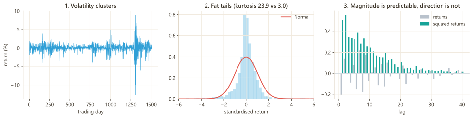
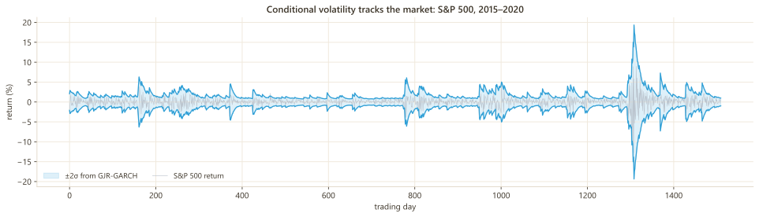
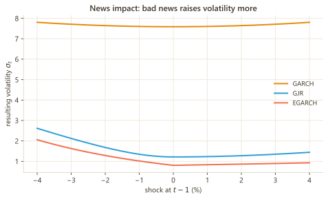
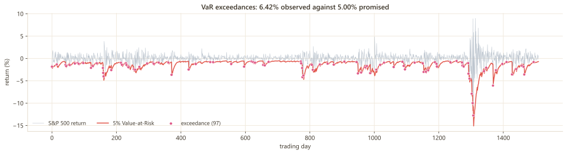
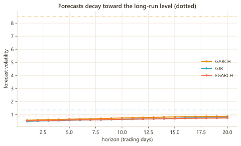
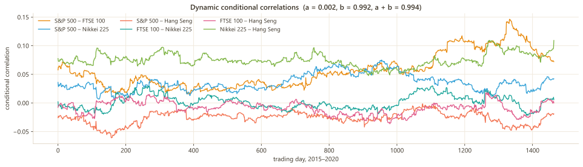
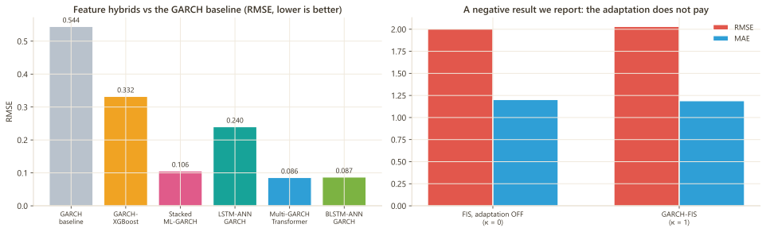

Overview
Volatility is the central quantity in risk management, option pricing and portfolio construction. GARCH models have described it since 1986; neural networks describe non-linear structure that GARCH cannot. The past decade has produced dozens of papers combining the two — each with its own notation, its own data, and often no code at all.
garchai implements that literature as a single library. Every model is built from its source paper, carries machine-readable provenance, declares its deviations, and is tested. Where a paper's claim does not reproduce, the library says so.
Built from the papers
Every model names its source, equations and departures. Seven of nine reference repositories carry no licence, so nothing was copied from them.
Validated numerically
Conditional-variance paths match arch to 4.4e-15. Structural claims are tested, not asserted.
Negative results published
Models report when they fail to beat their own baseline. Three such findings are documented on this page.
1 · Theory
Three empirical regularities motivate everything in this library. They hold across equities, currencies, commodities and crypto, and any credible volatility model must reproduce them.

The GARCH family
Write the return as a conditional mean plus a shock whose size varies through time:
The family differs only in how ht is generated:
| Model | Variance equation | What it adds |
|---|---|---|
| ARCH(1) Engle 1982 | ht = ω + α ε²t−1 | Volatility depends on the last shock. Needs many lags to fit real data. |
| GARCH(1,1) Bollerslev 1986 | ht = ω + α ε²t−1 + β ht−1 | Adds memory of past variance. Three parameters fit most series remarkably well. |
| GJR-GARCH Glosten et al. 1993 | ht = ω + α ε²t−1 + γ ε²t−1 I[εt−1<0] + β ht−1 | Leverage effect: falls raise volatility more than equal-sized rises. |
| EGARCH Nelson 1991 | log ht = ω + α(|zt−1|−E|z|) + γ zt−1 + β log ht−1 | Models the log variance, so positivity is automatic and no constraint is needed. |
| Component Engle & Lee 1999 | ht − qt = α(ε²t−1 − qt−1) + β(ht−1 − qt−1) | Splits volatility into a slow permanent level and fast transitory swings. |
α + β measures how long a shock to volatility survives. Values near 1 — 0.97 is typical for equity indices — mean today's surprise still moves variance months from now. If your estimate exceeds 1 the process is non-stationary and the long-run variance does not exist; garchai enforces α + β < 1 structurally through a softmax-simplex transform rather than checking afterwards.


Why add a neural network?
GARCH imposes a rigid functional form. It is astonishingly robust — decades of attempts to beat it have mostly failed — but three limitations are genuine and motivate every paper in this library:
Fixed non-linearity
The response to a shock is quadratic by assumption. Real markets may respond differently to a 2σ move than a 6σ one in a way no fixed polynomial captures.
Constant parameters
One α and one β for the whole sample. Regimes change; a crisis and a calm decade plausibly have different dynamics.
No exogenous information
Only past returns enter. Order flow, sentiment, realised measures and cross-market spillovers are all excluded by construction.
An unconstrained network fitted to returns will happily produce negative variances, explosive recursions, and superb in-sample fit that vanishes out of sample. The interesting question is never "can a network fit volatility" — it is how to add flexibility while keeping the constraints that make the object a variance at all. That is what distinguishes the five approaches below.
2 · Taxonomy of methods
The twenty-four papers fall into five families. They are not variations on a theme — they differ in where the network is allowed to touch the model, and that choice determines what guarantees survive.
| Family | Where the network sits | Constraints retained | Interpretable? | Data needed | Models |
|---|---|---|---|---|---|
| A · Structural | Inside the recursion for ht |
All — positivity and stationarity enforced by construction | High — parameters keep their meaning | Returns only | GARCHNN, RECH, SigmaCell, GARCHNet, NeuralGARCH, DeepRGARCH, ANNGARCH, EmbeddedGARCH* |
| B · Informed | Free architecture; GARCH penalises the loss | Soft — a penalty, not a guarantee | Medium | Returns only | GINN, GINN0 |
| C · Feature | Entirely outside; GARCH is a column | None — the learner may output anything | Low | Returns + a volatility proxy | LSTMANNGARCH, GARCHXGBoost, StackedMLGARCH, MultiGARCHTransformer, GARCHTFT |
| D · Decomposition | After splitting the signal by frequency or timescale | Depends on the per-component model | Medium | Returns; ideally long samples | GENSHIN, MSGNet, component GARCH, VMD |
| E · Decision | Consumes volatility to act, not to forecast | Inherited from the volatility model | Medium–High | Returns + a labelling rule | GARCHDDQNVaR, GARCHFIS |
Moving down the table buys flexibility and gives up guarantees. Family A cannot produce a negative variance because the transform forbids it; family C can, and routinely does unless you clamp the output. Family A models also reduce exactly to their econometric parent when the network weight is zero — a property this library tests numerically (GARCHNN to 0.0e+00, RECH to 4.4e-16). Family C has no such fallback: if the network is useless, the model is useless.
3 · Preconditions
Most volatility results that fail to replicate fail for reasons upstream of the model. Work through this before fitting anything.
3.1 Data requirements
| Requirement | Why | How to check | If violated |
|---|---|---|---|
| Returns, not prices | Prices are non-stationary (near unit-root). GARCH assumes a stationary series. | r = 100·Δlog(P) | Meaningless estimates |
| Scaled to percent | Decimal returns give variance ≈1e-4; the optimiser is badly conditioned there. | mean(|r|) ≈ 0.5–2 | Use ModelConfig(scale="auto") |
| ≥ 500 observations | Three variance parameters need data. Below ~500, standard errors are unusable. | len(r) | Widen the sample or simplify the model |
| ≥ 1500 for neural models | Hundreds to thousands of weights. Below this, the network memorises. | len(r) | Use family A or plain GARCH |
| ARCH effects present | If squared returns show no autocorrelation there is no conditional heteroskedasticity to model. | Ljung–Box on r² | A constant-variance model is correct — stop |
| No gaps or duplicates | The recursion assumes evenly spaced observations. | index.duplicated() | Reindex to trading days |
| Mean removed | Leftover mean structure leaks into the variance equation. | ACF of r | Set ModelConfig(mean="ar") |
3.2 Before you fit
- Set float64 first.
torch.set_default_dtype(torch.float64)before constructing any model — likelihoods involvelog htand float32 gradients are unreliable. - Split chronologically, never randomly. A random split lets the model see the future. This is the most common fatal error in the applied literature.
- Choose a volatility proxy and state it. Squared returns are unbiased but extremely noisy; realised variance from intraday data is far better; a rolling standard deviation is smooth but autocorrelated, which inflates R² and makes results incomparable across papers.
- Fix every seed.
set_seed(0)covers NumPy, PyTorch and Python. - Decide the loss before seeing results. QLIKE for variance, not MSE — MSE is dominated by a handful of crisis days.
3.3 After you fit — diagnostics that decide validity
| Check | What it detects | Pass condition |
|---|---|---|
| Convergence status | Optimiser stopped early | result.converged is True; not "maximum epochs reached" |
Persistence α+β | Non-stationarity | < 1, and ideally < 0.999 |
Ljung–Box on zt | Leftover mean structure | p > 0.05 |
Ljung–Box on z²t | Volatility structure the model missed | p > 0.05 — the key diagnostic |
| Sign-bias test | Unmodelled asymmetry | p > 0.05, else move to GJR/EGARCH |
| Kupiec & Christoffersen | VaR mis-calibration and clustering | both p > 0.05 |
If the parameters were estimated on the same returns you are testing against, the test is optimistic. A genuine evaluation refits on a rolling window that never sees the future. In this library's own documentation the in-sample example is rejected by Kupiec — 6.6% violations against 5% promised — and that failure is kept in the guide rather than replaced with a passing one.
4 · Model catalogue
Twenty-one models built in full; three delegated to hybridecon rather than duplicated. Tiers reflect priority and structural depth: S is deepest integration, C is most applied.
Tier S — the network is inside the recursion
| Paper | Classes | Idea | Family |
|---|---|---|---|
| Zhao et al. 2024 | GARCHNN, StructuralGARCHLSTM, GARCHNNKernel, GJRNNKernel, FIGARCHNNKernel | Network output is added to a GARCH kernel. Zero the weight and you recover GARCH exactly. | A |
| Nguyen et al. 2022 | RECH, SRNGARCH, SRNGJR, LSTMtGARCH | A recurrent net supplies a time-varying constant ωt while α, β stay econometric. | A |
| Liu et al. 2023 | DeepRGARCH, RealizedGARCH | Adds a realised-measure equation; the network models the measurement link. | A |
| Yin & Barucca 2022 | NeuralGARCH, NeuralBEKK | Variational inference over time-varying αt, βt. BEKK extends it to a covariance matrix. | A |
| Wei et al. 2025 | EmbeddedGARCHGRU, EmbeddedGARCHLSTM | The GARCH recursion is embedded as a gate inside a GRU/LSTM cell. | A |
Tier A — likelihood, informed loss and decomposition
| Paper | Classes | Idea | Family |
|---|---|---|---|
| Rodikov & Antulov-Fantulin 2023 | SigmaCell, SigmaCellN, -RL, -NTV, -RLTV | GARCH rewritten as an RNN cell — 41 parameters exactly, verified. | A |
| Rodikov & Antulov-Fantulin 2022 | SigmaLSTM | LSTM with a variance-recursion readout. | A |
| Buczynski & Chlebus 2023 | GARCHNet | The distribution shape (ηt, λt) becomes time-varying, not just the variance. | A |
| Liu & So 2020 | ANNGARCH, LikelihoodGARCHLSTM | ANN trained on the GARCH likelihood, with exogenous inputs. | A |
| De Clerk & Savel'ev 2022 | AmortizedGARCHInference | Learns the estimator itself from the analytic moment map — parameters in milliseconds, no MLE. | A |
| Xu et al. 2024 | GINN, GINN0 | GARCH enters the loss as a consistency penalty weighted by λ. | B |
| Yu et al. 2025 | GENSHIN, MSGNet, GARCHFeatureBank | VMD decomposition + a 60-model GARCH bank + multi-scale graph network. | D |
Tier B — hybrids, transformers and multivariate
| Paper | Classes | Idea | Family |
|---|---|---|---|
| Petrosino et al. 2025 | GARCHTFT | Full Temporal Fusion Transformer: variable selection, interpretable attention, pinball loss. | C |
| Fatima & Uddin 2022 | DCCGARCHMANN | DCC-GARCH ↔ multivariate ANN, in both directions. | multi |
| Hu et al. 2020 | LSTMANNGARCH | LSTM + ANN over GARCH features; bidirectional gives BLSTM-ANN. | C |
| Rubio et al. 2026 | StackedMLGARCH | Stacked ensemble with blocked out-of-fold predictions. | C |
| Gebreslase et al. 2026 | MultiGARCHTransformer | Transformer over a bank of GARCH-family forecasts. | C |
Tier C — applied and frontier
| Paper | Classes | Idea | Family |
|---|---|---|---|
| Maingo et al. 2025 | GARCHXGBoost | Gradient boosting on the GARCH residual, so it cannot re-learn what GARCH knew. | C |
| Pokou et al. 2025 | GARCHDDQNVaR | VaR as classification, solved by a Double DQN with an imbalance-aware reward. | E |
| Li & Zhang 2026 | GARCHFIS | Fuzzy rule base whose membership widths scale with the GARCH forecast. | E |
| Comput. Econ. 2026 | SentimentGARCHX, SentimentGARCHLSTM | Sentiment as an exogenous variance term. Feed is proprietary — not reproduced. | C |
Kim & Won (2018), Michańków et al. (2023) and Ersin & Bildirici (2023) are plain feature hybrids already covered by hybridecon. garchai delegates rather than reimplementing them — a library that duplicates its neighbours makes both harder to trust.
5 · Algorithms
The numerical machinery that makes these models trainable. Each solves a specific failure that appears the moment you put a variance recursion inside an autograd graph.
Structural parameter transforms
A variance must be positive and a GARCH must be stationary. Rather than clipping after each step — which breaks gradients — the parameters are reparameterised so violations are impossible:
- Softmax simplex for
(α, β), guaranteeingα + β < 1 - Softplus for
ωand every positive scale - nextafter-guarded bounded map for open intervals such as the Student-t degrees of freedom, whose boundary is exactly where the variance ceases to exist
Two backcast conventions
The recursion needs h1, and packages disagree on it. Both are implemented exactly, because a silent mismatch makes cross-package comparison meaningless:
arch_backcast— λ = 0.94, τ = min(75, T), plus one pre-sample recursion steptsgarch_backcast— λ = 0.7, full sample, used directly
Getting the pre-sample step right moved parity with arch from 1e-3 to 4.4e-15.
Chunked affine scan
The recursion ht = ct−1 + β ht−1 is sequential, and a Python loop over 5,000 steps inside autograd is crippling. Evaluating it in closed form over blocks sized so β−K stays inside float64 took filtering from 555 ms to 1.0 ms — a 555× speed-up with no loss of precision.
VMD by ADMM
Variational Mode Decomposition splits a series into band-limited modes by alternating-direction optimisation with mirror extension at the boundaries. Verified by construction: planted 5 Hz, 40 Hz and 120 Hz tones are recovered exactly, and energy shares track squared amplitudes.
Two-stage DCC
Stage one fits a univariate GARCH per series; stage two estimates (a, b) on the standardised residuals by QMLE. The normalisation Rt = diag(Qt)−½ Qt diag(Qt)−½ is what makes Rt a correlation matrix. Recovery on simulated data: true a = 0.05, b = 0.90 → estimated 0.055, 0.877.
Double DQN with imbalance-aware reward
Crisis days are rare, so an averaged loss learns to always say "calm". The reward carries the asymmetry instead: +1 for a detected crisis, −1 for a false alarm, ±ρ for the majority class where ρ is the minority/majority ratio. Double DQN decouples action selection from evaluation to remove the overestimation bias.
Interpretability machinery
| Mechanism | Where | What it tells you |
|---|---|---|
| Variable selection networks | GARCHTFT | Softmax weights per input per timestep — including whether the GARCH column was used at all. On the S&P 500 example it receives 0.16–0.19 against the 0.33 a uniform split would give. |
| Interpretable attention | GARCHTFT | Sharing the value projection across heads makes the averaged attention map meaningful; ordinary multi-head attention gives each head its own values, so averaging them says nothing. |
| Component decomposition | ComponentGARCHCell | Splits variance into permanent and transitory parts. The transitory part can go negative — volatility below its slow-moving level, which a one-component GARCH cannot express. |
| Membership widths | GARCHFIS | Plots how "high volatility" is redefined as the regime changes. |
| Sentiment contribution | SentimentGARCHX | The share of conditional variance attributable to sentiment. Near zero means the augmentation is inert whatever the likelihood says. |
6 · Tests & validation
597 automated tests. They exist in four layers, and the layers answer different questions — passing unit tests says nothing about whether a paper reproduced.
Numerical parity
Conditional-variance paths compared against arch observation by observation. Agreement to 4.4e-15, i.e. floating-point noise. Any divergence is a bug in this library, not a modelling choice.
Structural identities
Claims a paper makes about its own architecture, tested numerically: zeroing the network weight recovers GARCH exactly (GARCHNN 0.0e+00, RECH 4.4e-16, DeepRGARCH 0.0); NeuralBEKK stays positive-definite through a 50σ shock; SigmaCell has exactly 41 parameters.
Parameter recovery
Simulate from a known process, estimate, compare. Sentiment-GARCH on a known DGP (α = 0.08, β = 0.85) recovers 0.0797, 0.8638. DCC recovers 0.055, 0.877 from 0.05, 0.90.
Anti-leakage
The tests that matter most for published results: splits must be chronological, stacking must use blocked out-of-fold predictions, and any speed shortcut must declare itself in the returned object's note.
Statistical tests provided for your own work
| Test | Null hypothesis | Use it to answer | Function |
|---|---|---|---|
| Diebold–Mariano | Equal predictive accuracy | Is model A significantly better than B? | diebold_mariano |
| Giacomini–White | Equal conditional predictive ability | Is A better given the current state? | giacomini_white |
| Model Confidence Set | Equal ability among survivors | Which models cannot be ruled out as best? | model_confidence_set |
| Kupiec POF | Violation rate equals α | Is my VaR at the right level? | kupiec_pof |
| Christoffersen independence | Violations are independent | Do my violations cluster? | christoffersen_independence |
| Christoffersen CC | Correct level and independence | Both at once | christoffersen_conditional_coverage |
| Dynamic quantile | No predictability in violations | Can violations be forecast from past information? | dynamic_quantile_test |
| McNeil–Frey | Zero-mean exceedance residuals | Is my expected shortfall calibrated? | expected_shortfall_backtest |
While validating the MCS, a defect was identified in hybridecon.evaluate.model_confidence_set: it studentises by the spread across models within a bootstrap replication, whereas Hansen's statistic requires the bootstrap variance of each d̄ᵢ across replications. garchai implements the correct form; the finding has been flagged upstream.
Running the suite
| Command | Tests | Time | When |
|---|---|---|---|
pytest -m "not slow" | 539 | 1m46s | While developing |
pytest --doctest-modules src/garchai | 597 | 5m43s | Before publishing anything |
pytest tests/numerical/ -v | — | fast | After touching a cell or transform |
7 · How to choose a model
Start from your question and your data, never from the newest architecture. This table resolves most cases in one step.
GARCH, GJRGARCH or EGARCH. Neural models will memorise. This is not a limitation to work around — it is the correct answer.GARCHNN or RECH. They degrade gracefully to GARCH if the network adds nothing, so you cannot do worse than the baseline by much.GJRGARCH, EGARCH, or family A with ComponentGARCHCell. Parameters retain their economic meaning. Avoid family C.RealizedGARCH or DeepRGARCH. Realised measures are a far better volatility proxy than squared daily returns, and using them is usually a bigger gain than any architecture change.ANNGARCH with n_exog, or SentimentGARCHX for a single variance-equation term.var_backtest_table. If violations cluster, try GARCHDDQNVaR — that clustering is exactly the problem it targets.DCCGARCHMANN for correlation dynamics with a network, NeuralBEKK for a full covariance matrix.GENSHIN (VMD + graph network), or ComponentGARCHCell for a simpler permanent/transitory split.GARCHTFT or MultiGARCHTransformer. Budget real effort for preventing leakage — see §3.AmortizedGARCHInference. It learns the estimator once, then returns parameters in milliseconds instead of running MLE per series.Always fit plain GARCH first and report it. It is the benchmark the entire literature is measured against, it takes seconds, and a neural model that cannot beat it on AIC — which penalises the extra parameters — has not earned its complexity. Several published hybrids do not clear this bar, and you want to discover that before submission, not after.
8 · Designing a study
A defensible volatility study has seven steps. Skipping any of them is where replication failures come from.
| # | Step | Decisions | Tools |
|---|---|---|---|
| 1 | Define the target | What are you forecasting — variance, volatility, VaR, a regime label? Which proxy? State it before you look at results. | garchai.targets |
| 2 | Prepare the data | Percent returns, gaps removed, ARCH effects confirmed present. | datasets, §3 |
| 3 | Split chronologically | Train / validation / test in time order. Never random. | features.split() |
| 4 | Fit the benchmark | GARCH, GJR, EGARCH with a Student-t distribution. This is what everything is compared against. | econometric |
| 5 | Fit the candidates | Same data, same split, same seed. Tune on validation only. | structural, ensembles |
| 6 | Evaluate with tests | QLIKE, not MSE. Diebold–Mariano for pairs, MCS for the set. Backtest any risk number. | evaluation, risk |
| 7 | Report honestly | Include the baseline, the ablation, and anything that failed. Table and figure exports are built in. | reporting |
If a paper's contribution is a mechanism — an informed loss, a fuzzy adaptation, a GARCH input — then the result that matters is the same model with that mechanism switched off. This library ships the ablations as first-class options: GINN0 (λ = 0), GARCHFIS(kappa=0), GARCHTFT(use_garch=False), SentimentGARCHLSTM(use_sentiment=False). A number without its ablation tells you about the pipeline, not the idea.
9 · Results
Every figure and table below comes from real market data using the bundled loaders, and is regenerable from the repository.
9.1 Value-at-Risk

| Model | Violation rate | |rate − 0.05| | Kupiec p | Christoffersen p |
|---|---|---|---|---|
| GARCH-DDQN | 0.0503 | 0.0003 | 0.9577 | 0.5513 |
| Unconditional quantile | 0.0501 | 0.0001 | 0.9812 | 0.1275 |
9.2 Forecast dynamics

method="simulation" in the result rather than silently approximating.9.3 Multivariate correlation dynamics

9.4 Model comparison

| Model | MAE | RMSE | R² |
|---|---|---|---|
| BLSTM-ANN-GARCH | 0.0689 | 0.0873 | +0.965 |
| Multi-GARCH Transformer | 0.0649 | 0.0858 | +0.964 |
| Stacked ML-GARCH | 0.0663 | 0.1057 | +0.938 |
| LSTM-ANN-GARCH | 0.1927 | 0.2401 | +0.687 |
| GARCH-XGBoost | 0.2430 | 0.3322 | +0.635 |
| GARCH baseline | — | 0.5445 | — |
9.5 GARCH-TFT — a proxy-specific result
| Target | Model | MAE | RMSE | R² | GARCH weight |
|---|---|---|---|---|---|
| HV | GARCH-TFT | 0.0529 | 0.1469 | 0.6048 | 0.187 |
| HV | TFT, no GARCH | 0.0695 | 0.1593 | 0.5957 | — |
| GK | GARCH-TFT | 0.0439 | 0.0782 | 0.6632 | 0.160 |
| GK | TFT, no GARCH | 0.0452 | 0.0841 | 0.6059 | — |
10 · Quickstart
Real S&P 500 data ships with the package. This runs as written.
import torch, warnings
warnings.filterwarnings("ignore")
torch.set_default_dtype(torch.float64) # always do this first
from garchai.datasets import load_returns
from garchai.econometric import GARCH
from garchai.core import ModelConfig, TrainConfig
returns = load_returns("sp500", start="2015-01-01", end="2020-12-31")
model = GARCH(config=ModelConfig(distribution="student-t"))
result = model.fit(returns, TrainConfig(max_epochs=800, refine_with_lbfgs=True))
print(model.summary()) # parameters, persistence, provenance
print(model.forecast(horizon=5).variance)
print(model.var(alpha=0.05)[-3:]) # Value-at-RiskThen swap in any neural model — the interface is identical:
from garchai.structural import GARCHNN, RECH, SigmaCell
model = GARCHNN(kernel="gjr") # network inside the recursion
model.fit(returns, TrainConfig(lr=1e-3, max_epochs=300))
print(model.summary())11 · Negative results
Software that only reports its successes is not research software. Three findings from this library's own reproduction work, published in full.
GARCH-FIS adaptation
The paper's sole contribution — membership widths scaling with GARCH volatility — makes RMSE and R² worse against its own κ = 0 ablation on S&P 500 returns. Two caveats are recorded (the paper forecasts prices, not returns; the scaling law is ours because the paper gives none) and both are labelled untested conjectures rather than explanations.
Stacked ML-GARCH
RMSE 0.1057 against 0.0569 for the best of its own base learners. The class returns beats_best_base: False rather than quoting only its own error — the expected hazard of stacking on 682 rows, and the reason the metric exists.
Sentiment GARCH-LSTM
The paper's sentiment feed is proprietary. The series is a required argument — the library will not invent one. On a public proxy, γ → 0 and the likelihood-ratio test gives p = 1.000: the augmentation correctly reports itself inert rather than manufacturing an effect.
The GINN reversal
Under a speed shortcut (refit_garch_every=10) λ = 1 was the worst model; under the paper's exact protocol (=1) it was the best. The conclusion flipped on a parameter that looks like an implementation detail. This is why every shortcut in the library declares itself in the returned object.
12 · Citation
If garchai contributes to published work, please cite it — and also cite the original paper of any model you use. Each is listed in model.provenance and in the coverage matrix.
@software{roudane2026garchai,
author = {Roudane, Merwan},
title = {garchai: Econometrically Constrained, Differentiable,
AI-Enhanced Conditional Heteroskedasticity Models},
year = {2026},
url = {https://github.com/merwanroudane/garchai},
license = {MIT}
}